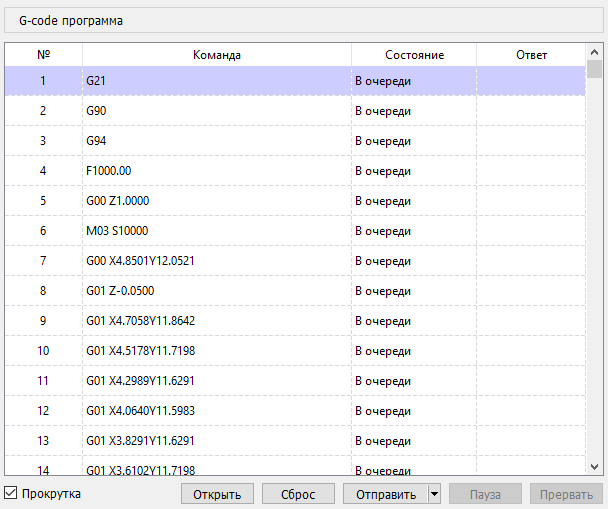

Текущая УП отображается в окне "G-код программа".

Каждая строка УП соответствует строке в таблице, содержащей столбцы:
УП может быть отредактирована, поддерживаются следующие функции:
Вход в режим редактирования команды УП выполняется двойным нажатием ЛКМ в столбце "Команда" выбранной строки или нажатием клавиши <F2> в предварительно выбранной ячейке. Подтверждение ввода измененной команды осуществляется нажатием клавиши <Enter> или <Tab>, отмена - нажатием клавиши <Esc>.
Для добавления строки - необходимо выбрать в таблице строку, перед которой вставляется новая строка, и активировать пункт "Вставить строку" контекстного меню, вызываемого нажатием правой кнопки мыши (далее - ПКМ) в области таблицы, или нажать на клавишу <Ins> клавиатуры.
Удаление выделенных строк таблицы производится вызовом пункта "Удалить строки" контекстного меню таблицы или нажатием на клавишу <Del> клавиатуры.
Под таблицей расположены кнопки управления загрузкой и отправкой УП в контроллер ЧПУ:
Следует учитывать, что при активации команд "Пауза" и "Остановить" фактическая остановка ЧПУ выполняется только по опустошению входного буфера команд контроллера. Для немедленной остановки ЧПУ необходимо использовать команды панели "Управление": "Удержание", "Сброс".
Слева от кнопок расположен флаг, отвечающий за автоматическую прокрутку таблицы в процессе отправки УП. При активной передаче УП в контроллер и ручной прокрутке таблицы флаг сбрасывается.